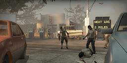
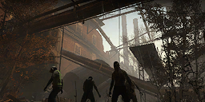
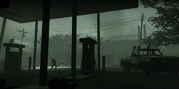
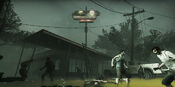

Campaña4
Campaña4
Hard Rain

Descripción:
Hard Rain es la quinta campaña de Left 4 Dead, que tiene lugar después de «Swamp Fever».
Se desarrolla en la localidad ribereña de Ducatel, Misisipi —denominada «Milltown» en el título
del capítulo—, mientras un huracán se aproxima. Al comienzo de la campaña, Virgil deja a los supervivientes
con la misión de encontrar y traer combustible diésel para su embarcación. El objetivo consiste en llegar a la gasolinera
«Ducatel Diesel» atravesando el pueblo abandonado de Ducatel, las ruinas del ingenio azucarero —plagadas de «Witches»— y un campo
de caña de azúcar repleto de infectados. Una vez que consiguen el combustible, llega un huracán y la zona se inunda
de inmediato, lo que obliga a los supervivientes a desandar el camino a través de agua que les llega hasta las rodillas —lo cual dificulta
su avance—, bajo ráfagas de viento y lluvia que reducen la visibilidad y entorpecen la audición. Cuando finalmente regresan a Ducatel,
los supervivientes avisan a Virgil para que vuelva a recogerlos encendiendo un letrero en el tejado de un establecimiento «Burger Tank»,
lo que da inicio al desenlace de la campaña.
Imagenes de la campaña:




-Volver a Campañas
-Anterior Campaña
-Siguiente Campaña